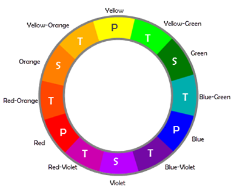
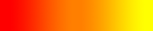

A color wheel is an illustrative model of color hues around a circle. It shows the relationships between the primary, secondary, and intermediate/ tertiary colors and helps demonstrate color temperature. Digital teams communicate exact colors through the use of hex codes.
Understanding the Color Wheel
Many color wheels are shown using 12 colors. Using this color wheel as an example, it can be read as follows:
- Three Primary Colors (Ps): Red, Yellow, Blue
- Three Secondary Colors (S’): Orange, Green, Violent
- Six Tertiary Colors (Ts): Red-Orange, Yellow-Orange, Yellow-Green, Blue-Green, Blue-Violet, Red-Violet, which are formed by mixing a primary with a secondary
It’s important to note that some people add more intermediates, for 24 total named colors, and some color wheels show interior points and circles, which represent color mixtures.
Color Temperature
The colors on the red side of the wheel are warm; the green side of the wheel has the cooler colors. These color temperature designations are absolute. More subtle color temperature relationships are relative, meaning that each color on the warm side of the wheel can be known as cool, and colors on the cools side of the wheel can be known as warm depending on the relationship to their neighboring color. Colors from the same hue, for instance red, can also be warmer or cooler than one another.
Color temperatures affect us both psychologically and perceptually by helping us determine how objects appear positioned.
| Warm Colors | Cool Colors |
|---|---|
|

|
|

Neutrals
Neutral colors include black, white, gray, tans, and browns. They’re commonly combined with brighter accent colors but they can also be used on their own in designs. The meanings and impressions of neutral colors depend more so upon the colors around them.
Color Models: CMYK vs. RGB
There are two models for colors. They have different purposes and different attributes. They are as follows:
- CMYK Color Models: Stands for cyan, magenta, and yellow. It applies to painting and printing. The CMYK model is a subtractive model, meaning that colors are created through absorbing wavelengths of visible light. The wavelengths of light that don’t get absorbed are reflected, and that reflected light ends up being the color we see.
- RGB Color Models: RGB stands for red, green, and blue. It applies to computers, televisions, and electronics. The RGB model is an additive model, meaning that colors are created through light waves that are added together in particular combinations in order to produce colors.
Hex Codes
To name colors in web design, teams use hexademal code. All hexadermal codes:
- Start with a hash mark (#)
- Consist of three pairs of characters sequenced together (totaling of six characters), with each pair controlling one of the primary additive colors (red, green, blue)
- Those six characters following the hash mark consist of ten numerals (0-9) and/ or six letters (a-f)
It is easy to identify patterns in the hex codes some colors; see SmashingMagazine’s great chart  at the right for this. Some things to know include:
at the right for this. Some things to know include:
- 00 is a lack of primary
- ff is the primary at full strength
To find additive colors, start with black and change each pair to ff:
- #000000 is black (no primaries)
- #ff0000 is the brightest red
- #00ff00 is the brightest green
- #0000ff is the brightest blue
To find subtractive colors, start with white and change each pair to 00:
- #ffffff is white (all primaries
- #00ffff is the brightest cyan
- #ff00ff is the brightest magenta
- #ffff00 is the brightest yellow
It is also possible to abbreviate some hex numbers. For instances #fae expands to #ffaaee and #09b expands to #0099bb.